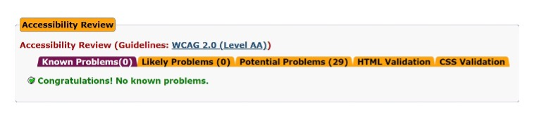
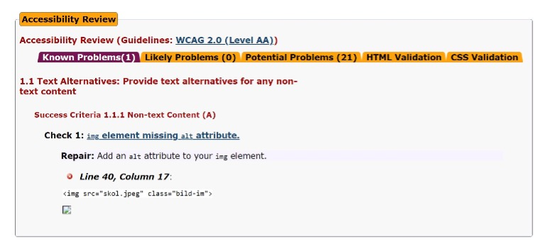
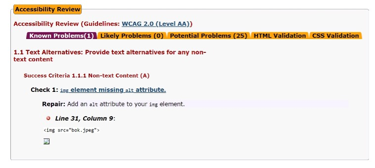
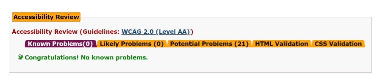

“Accessibility” eller tilgjengelighet som vi kan kalle det på norsk spiller en betraktelig stor rolle når det kommer utforming av en webside. Det er meget viktig å ta hensyn til alle mulige brukere av ens webside. Med nøyaktig dette i baktanke, brukte jeg en god del tid på å gjøre vår side mest mulig brukervennlig i forhold til de mulige begrensninger brukerne våre kan ha eller oppleve. Jeg vil si at jeg gjorde mitt beste på den tiden jeg hadde, slik at flest mulig skal ha gleden av å benytte seg av siden til det fulle potensialet. Under ser dere resultater av de automatiserte testene som ble utført.
Accessibility
Jeg benyttet meg av Achecker for å sjekke tilgjengelighet(accessibility) av websiden. Det viste seg å ikke være noen betydelige problemer med det første. Bortsett fra at jeg fikk varsel på at det manglet «alt» attributt i image elementer. Etter denne automatiserte testen ble utført, fikk jeg også noen medstudenter til å navigere seg på websiden. Hvor vi i etterkant spurte hvordan deres opplevelse var, og hva som kunne forbedres. jeg tok imot all konstruktiv kritikk og utbedret på det som ble kommentert på til mitt beste evne. Et eksempel er at jeg forstørret skriften slik at det skulle bli enklere å lese, samt delt opp i flere avsnitt.
Achecker – Index.html
Achecker – Funpage.html
Achecker – Topic.html
Achecker – Menu.html
Websiden har først og fremst en tydelig logo «Barroc Cafe» innlemmet med navigasjonsbaren som står øverst på siden. Jeg valgte å gå for en festet/låst navigasjonsbar som sørger for at du til enhver tid kan navigere deg videre, uavhengig av hvor du er på siden (f.eks. hvis du er lengre nede på selve siden). Navigasjonsbaren vil altså alltid være synlig. Her kan du klikke på de forskjellige knappene for å navigere til de ulike sidene. Holder du over knappene fremheves disse, med en grønn skygge og tydelig hvit skrift som sørger for at det blir ekstra synlig for brukeren. Samt har vi også logoen som det kastes skygge over når du holder over den.
Jeg valgte å gå for en stilren og minimalistisk utseende, samtidig som den er litt utfyllende i form av bakgrunnsbilder som er i tråd med temaet mitt. Mindre tekst blir satt inn i boks for å gjøre det mer ryddigere. Videre forblir de lengre tekstene ikke satt i boks, ettersom det ser mer naturligere ut. Lenker er fremhevet med tykkere skrift, som også er satt i kursiv. Dersom brukeren holder over en lenke, lyser det opp en klar og tydelig fargestrek under teksten som indikerer at det er lenke tilstede.